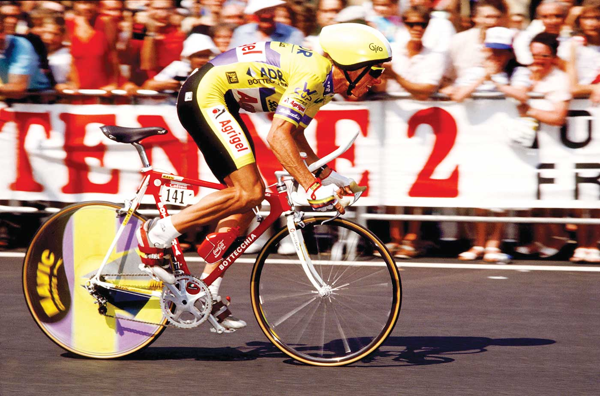

Greg LeMond jedzie czasówkę na kierwonicy własnej konstrukcji,
która zapewniła mu zwycięztwo zarówwno etapowe jak i w całym tourze.
Historia Grega
W 1986 roku został pierwszym nieeuropejskim cyklistą, który wygrał Tour
de France. Wyścig dookoła Francji wygrał również w latach 1989 i 1990,
przechodząc jednocześnie do historii jako jeden z ośmiu zawodników,
którzy wygrali najsłynniejszy na świecie wyścig kolarski co najmniej
trzy razy. Szczególnie wygrana w roku 1989 zasługuje na uznanie z trzech
powodów: aerodynamicznej kierownicy zastosowanej po raz pierwszy w
historii w kolarstwie szosowym zwanej do dziś lemondką; sukces ten
odniósł po dwuletniej przerwie w karierze spowodowanej ciężkim postrzałem
na polowaniu; legendarnym 8 sekundom przewagi nad Francuzem Laurentem
Fignonem, które uzyskał na ostatnim etapie Touru (wówczas była to
czasówka z Wersalu do Paryża długości 24,5 km), zapewniając sobie
zwycięstwo w wyścigu. Jest to do dziś najmniejsza przewaga w klasyfikacji
generalnej pomiędzy pierwszym a drugim zawodnikiem. W 1985 roku był drugi,
a rok wcześniej trzeci w klasyfikacji generalnej. W 1984 roku zdobył także
maillot blanc. Łącznie we wszystkich startach w TdF wygrał siedem etapów,
w tym pięć indywidualnych i dwie drużynowe jazdy na czas.
Jeśli chcesz przeczytać więcej o Gregu LeMondzie wejdź na
Wikipedię